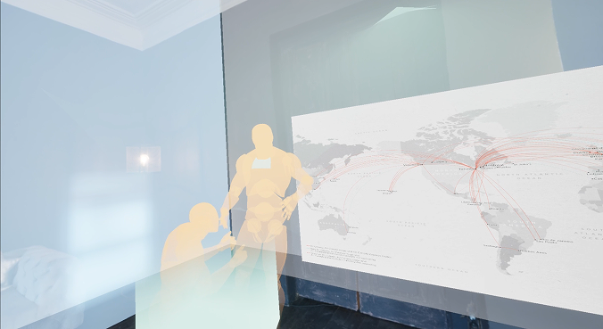
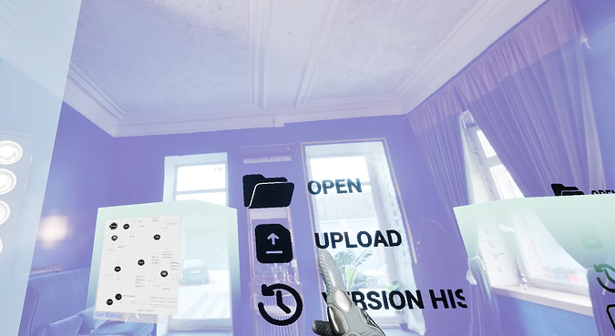
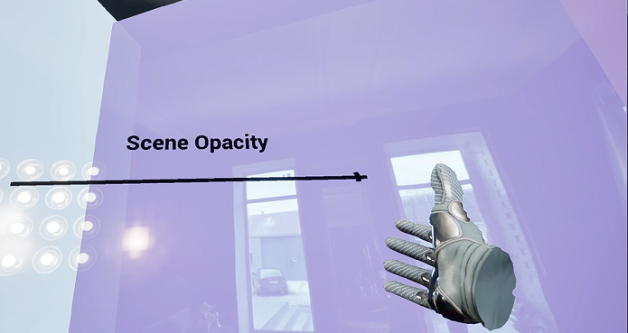
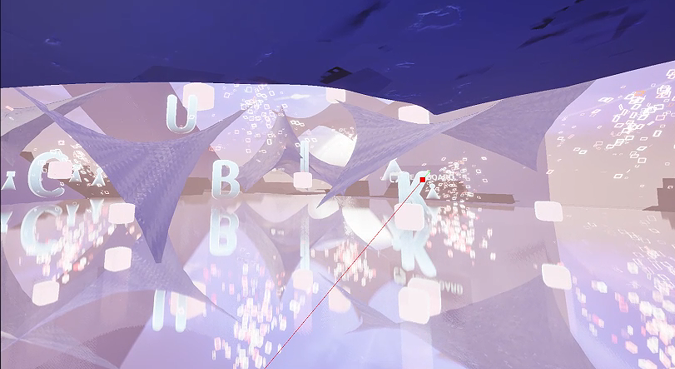
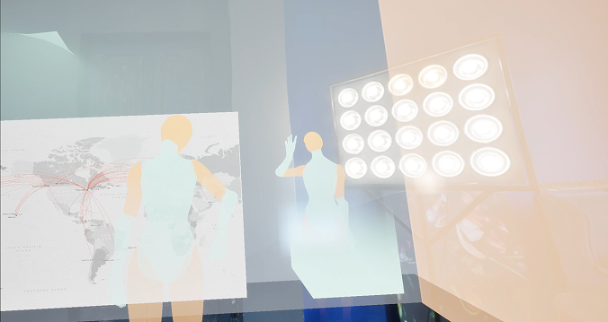

CUBIK
A VR workspace where each person owns a cube — one face for each mode of work — so collaborating means handing over space, not taking someone’s time.
- Challenge
- Remote work runs on synchronous meetings and folder logic built for flat screens, and VR offices have copied both.
- Insight
- In space, people find things by place and by body, not by paths and permissions.
- Result
- A working Quest build with gravity-adaptive navigation, files you can grab, and menus projected onto each surface.
Remote work keeps growing, but no VR office has found its premise.
Big-platform attempts like Microsoft Mesh have been retired. The gap isn’t hardware, it’s a product model that still assumes everyone meets at the same time.
$322BSaaS market after COVID, up from $141B
51%Remote work penetration, up from 43.8%
1/20VR office’s share of the SaaS market, at most
Six faces stand in for the folders.
The cube turns as you do. Whichever face is beneath you sets your mode, so you always know where you are without a menu.
MEETINGShare · present
—Reserved
WORKSPACEFocused work
—Reserved
ARCHIVEHistory · restore
HOMEOpen · upload
- Place over pathFiles live on surfaces you can turn toward, not in folders you navigate.
- Handoff over meetingTeammates exchange spatial context when ready, without forced synchronization.
- Weight over flatnessSkeuomorphic objects with depth and grip, since flat icons cause “click uncertainty” in XR (Gloude et al., 2024).
A working build, not a concept render.





- 6DOF gravity-adaptive navigation
- Sphere-trace file grabbing
- Projected holographic menus
- Multi-user proximity presence
- OpenXR on Meta Quest Link